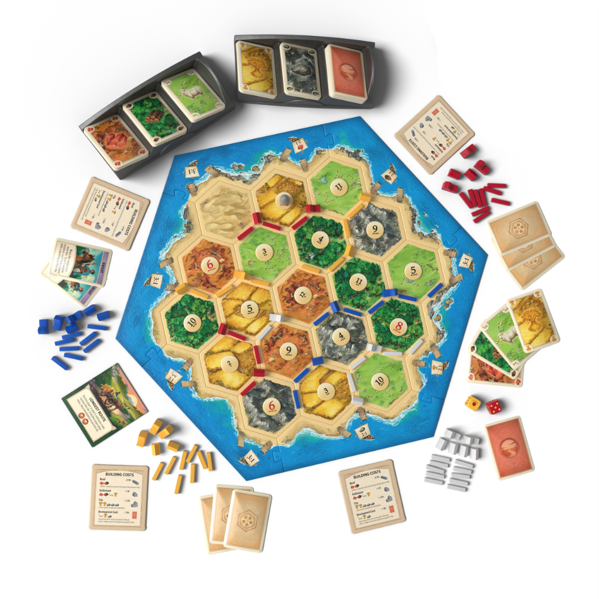

Классика мирового настольного геймдева и эталон семейной стратегии

История создания и феномен популярности
В 1995 году скромный зубной техник из Дармштадта Клаус Тойбер создал настольную игру Die Siedler von Catan («Поселенцы Катана»),
которая навсегда изменила мировую индустрию настольных игр. До появления Catan на западном рынке доминировали либо бесконечные и агрессивные
игры вроде «Монополии» и «Риска», либо детские «кинь-двинь».
«Колонизаторы» предложили абсолютно новый подход к игровому процессу: здесь нет выбывания игроков, никто не разоряется до конца партии,
а взаимодействие строится на дипломатии и взаимовыгодной торговле. Игра завоевала престижнейшую немецкую премию Spiel des Jahres
в 1995 году и разошлась тиражом свыше 40 миллионов копий по всему миру, породив десятки дополнений и цифровых адаптаций.
Игровой процесс и ключевые механики
Игроки выступают в роли первопроходцев, высадившихся на неизведанном острове Катан.
Поле собирается из 19 шестиугольных гексов суши, окруженных океаном. Каждый гекс представляет один из пяти видов местности
и производит определенный ресурс:
Леса производят древесину;
Холмы дают глину (кирпичи);
Пастбища приносят шерсть (овец);
Пашни поставляют зерно (пшеницу);
Горы дают ценную руду (железо);
Пустыня не производит ничего, но служит исходным пристанищем разбойника.
Структура игрового раунда
Каждый ход активного игрока состоит из трех последовательных фаз:
Сбор сырья (Бросок кубиков): игрок бросает два шестигранных кубика. Гексы с выпавшим числом приносят соответствующие ресурсы всем игрокам, чьи поселения или города примыкают к этим гексам. При выпадении числа 7 активируется разбойник, а игроки с более чем 7 картами сбрасывают половину руки.
Торговля: активный игрок может обмениваться ресурсами с соперниками на любых взаимовыгодных условиях, либо совершать морскую торговлю с банком (по курсу 4:1) или в специальных гаванях (по курсу 3:1 или 2:1).
Строительство: игрок тратит ресурсы на прокладку новых дорог, основание поселений, улучшение поселений до городов и покупку карт развития.
Условия победы
Побеждает игрок, первым набравший 10 победных очков (ПО) в свой ход.
Очки начисляются за следующие достижения:
Каждое построенное поселение — 1 ПО;
Каждый улучшенный город — 2 ПО;
Самый длинный тракт (непрерывная цепь дорог длиной не менее 5 звеньев) — 2 ПО;
Самая большая армия (игрок, первым открывший 3 карты рыцарей) — 2 ПО;
Карты развития с победными очками (Часовня, Библиотека, Рынок и др.) — по 1 ПО за каждую карту.
Комплектация базовой коробки
В стандартный комплект игры входят следующие элементы:
19 шестиугольных гексов суши;
6 рамочных морских элементов с гаванями;
18 круглых номерных жетонов с буквами и цифрами вероятности;
2 особые карты: «Самый длинный тракт» и «Самая большая армия»;
96 деревянных или пластиковых фигурок четырех цветов (16 городов, 20 поселений, 60 дорог);
1 серая фигурка разбойника;
2 шестигранных игральных кубика;
Правила игры и справочник колонизатора.
Интересные исторические факты о Catan
Клаус Тойбер тестировал первые прототипы игры на своей семье прямо за кухонным столом более 4 лет.
Изначально игра называлась «Колонизация», и в ней предполагалось исследование не только суши, но и мореплавание с рыцарскими турнирами. Позже эти идеи легли в основу дополнений «Мореходы» и «Города и Рыцари».
«Колонизаторы» стали первой настольной игрой европейской школы, получившей широкую популярность среди IT-предпринимателей Кремниевой долины, включая Марка Цукерберга и Рида Хоффмана.
С 2002 года регулярно проводится Чемпионат мира по игре Catan.